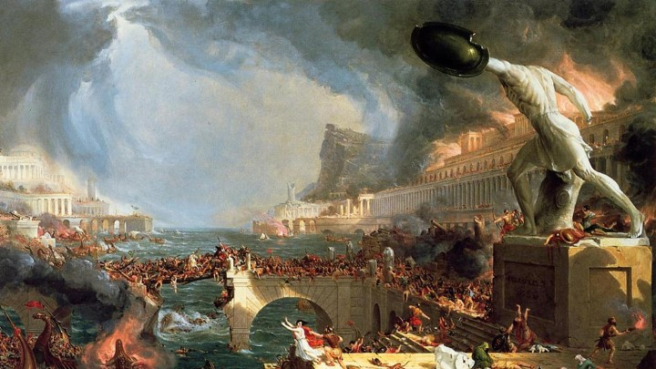

Градус напряженности: 5 климатических событий, которые изменили ход истории
Веками природа дирижировала историей: с потеплением расцветали империи, похолодания приводили к миграциям и войнам, эпидемии формировали самосознание поколений, а вулканические зимы способствовали появлению великой литературы. С точки зрения климатологии европейская история и даже культура выглядят как цепь реакций на температурные скачки. Мы выбрали 5 климатических событий, сделавших наш мир таким, каким мы его знаем.
Римский климатический оптимум и расцвет империи

Во времена правления императора Октавиана (с 27 года до н.э. по 14 год н.э.) начался так называемый Римский климатический оптимум (оптимум — самый теплый интервал времени в каждой теплой фазе текущего геологического периода — прим. T&P), который продлился до 400 года н.э. Он способствовал расцвету и максимальному расширению одной из ведущих цивилизаций древнего мира — Римской империи — культура которой стала основой для европейской. Успех Древнего Рима способствовал распространению на континенте латинского алфавита и языка, который дал начало современным языкам романской группы: итальянскому, французскому, испанскому, португальскому, каталонскому, румынскому, молдавскому и другим.
Во времена Римского климатического оптимума климат в Европе стал мягким и жарким, но не сухим. Альпийский глетчер отступил, перевалы в горах стало легче преодолеть, и римляне завоевали Галлию, Нижнюю и Верхнюю Германию, Рецию, Норик, а также другие области.
В Северной Европе тем временем начала расти численность племен, и уже во II и III веке н.э. готы, гепиды и вандалы стали двигаться на юг в поисках новых земель. Последние позже получили известность как жестокие разорители Рима, захватив его в 455 году (благодаря этому историческому событию возник термин «вандализм»), когда погода на континенте начала портиться и зимы стали холоднее.
Похолодание и великое переселение народов

Климатический «день» закончился в V веке. На смену теплому периоду пришел климатический пессимум раннего Средневековья, и жизнь населявших Европу и Азию народов стала трудной. Кульминацией стало похолодание 535—536 годов, которое было самым резким за последние два тысячелетия. Его причиной было снижение солнечной активности и извержения вулканов, из-за которых атмосфера Земли отчасти потеряла прозрачность. Вулкан Кракатау в Зондском проливе между островами Ява и Суматра и вулкан Тавурвур на острове Новая Британия (Новая Гвинея) выбросили в атмосферу огромную массу пепла, затмившего свет. Византийский писатель Прокопий Кесарийский пишет о 536 годе с благоговейным ужасом: «…и в этом году произошло величайшее чудо: весь год солнце испускало свет как луна, без лучей, как будто оно теряло свою силу, перестав, как прежде, чисто и ярко сиять. С того времени, как это началось, не прекращались среди людей ни война, ни моровая язва, ни какое-либо иное бедствие, несущее смерть».
Одновременно, а может, и вследствие резкого похолодания произошла мутация чумной палочки. На севере планеты началась пандемия, холод погубил урожай, люди стали голодать и в поисках лучшей доли начали сниматься с обжитых мест. Это, разумеется, сопровождалось войнами. «Великий король франков» Теодеберт I из династии Меровингов захватил земли в Альпах и на северо-востоке Италии. Иллирия и Фракия начали страдать от набегов гуннов, антов и других племен. Авары вторглись в степи Западного Прикаспия, Северное Причерноморье и Византию. Славяне дошли до побережья Балтийского и Северного морей, попали в Северную Италию, предгорья Альп, верховья Рейна и низовья Дуная. На востоке образовался союз племен тюркской группы и сформировался Тюркский каганат, которому опустошенный голодом Китай вынужден был заплатить дань. Тюркские набеги начались в районе Керченского пролива и в областях, близких к Корее.
Так, по мнению ученых, климатический пессимум стал одной из ключевых причин Великого переселения народов, которое создало предпосылки для образования и развития на континенте в период Средневековья совершенно новых государств.
Две ледяные весны и Великий голод
Великий голод охватил Европу в 1315–1322 годах. Он затронул нынешнюю территорию Великобритании, Франции, Нидерландов, Германии и Польши, а также Скандинавию. Причиной катастрофы стали плохие погодные условия весны 1315 года, которые не дали крестьянам вспахать поля. Из-за ливней семена гнили, не успевая дать всходы. Урожай оказался намного меньше обычного, но следующая весна не принесла облегчения и вновь оказалась холодной и сырой.
К апрелю 1317 года от голода страдали уже все слои населения. Хуже всего приходилось самым бедным — у них уже не оставалось ни зерна, ни рабочего скота. Младенцев и маленьких детей нередко бросали на произвол судьбы, не зная, как их прокормить. Среди старшего поколения многие по доброй воле голодали до смерти, чтобы дать шанс на выживание более сильным и молодым членам семьи, которые могли работать на полях. Появились сообщения о каннибализме, хотя сегодня нельзя сказать, были ли они достоверны или оставались просто паническими слухами.
Последствия голода ощущались до 1322 года. Он повлек за собой миллионы смертей, а те, кто смог выжить, страдали от авитаминоза и различных болезней. Великий голод подготовил плодородную почву для «Черной смерти» — второй пандемии чумы, которая началась в 1347 году и тоже стала следствием погодных изменений.
Засуха в Гоби и вторая пандемия чумы
Вторая пандемия чумы охватила Европу и Азию в XIV веке и полностью изменила их генетический, политический, религиозный, культурный и социальный ландшафт, определив вектор исторического развития. Ее отправной точкой стали засухи в пустыне Гоби, неподалеку от нынешней монголо-китайской границы, которые начались здесь около 1320 года. Нехватка еды погнала сурков-тарбаганов и пищух к человеческому жилью. Животные болели чумой и были ее переносчиками, так что болезнь быстро перекинулась на местных жителей, считавших мясо сурков деликатесом. К 1338 году чума добралась до озера Иссык-Куль. В местной несторианской общине за 12 месяцев умерло множество людей, о чем свидетельствует катастрофически большое количество могильных камней. Через земли Центральной Азии зараза проникла в Золотую Орду, оттуда — с купеческими караванами — на Средний Восток и Крымский полуостров и затем, на кораблях генуэзцев, в Европу. Всего за время пандемии в Евразии погибло 60 миллионов человек, в некоторых регионах — от трети до половины населения.
Эта катастрофа изменила оба континента, начиная с соотношения групп крови и заканчивая экономикой. Золотая Орда ослабла и пришла к культурному и политическому упадку. В Европе монастыри и духовенство начали принимать в свой круг менее образованных людей, что снизило общий уровень эрудиции в церкви и сделало ее служителей более склонными к суевериям и дремучей жестокости, отчасти проявившейся позднее в действиях инквизиции. «Семейные» цеха, где мастерство передавалось лишь от отца к сыну, вынуждены были открыть свои двери для чужаков; за недостатком мужчин в сферу производства стали втягиваться женщины. Очнулась от спячки медицина, в сельском хозяйстве изменилось соотношение земледелия и скотоводства: многие поля превратились в пастбища, которые требовали меньше человеческих ресурсов — один или два пастуха могли следить за огромными стадами. Крестьяне, батраки и слуги стали разборчивее, поскольку рабочей силы после эпидемии не хватало. Люди из низших слоев общества впервые задумались о собственных правах, что намного позже вылилось в буржуазные революции.
Восприятие смерти в конце XIV и XV веках было макабрическим. Мысли о гибели и конечности бытия проникли в повседневность и крепко укоренились в ней, окрасив ее в оттенки «мрачной святости и красочной, разнообразной жути, к которым позднее Средневековье испытывало такую охоту». Узнавший чуму человек не испытывал нежности к умершим и не знал элегической грусти, ощущая вместо них, скорее, «жестокое умиление и кровавое умягчение сердца». Неудивительно: ведь смерть жила с ним бок о бок, постоянно напоминая о себе и целиком определив сознание в ту эпоху. И все же это сознание так и не решилось сделать ни шагу дальше, «чтобы увидеть, что само тление также исчезает и прах становится почвой, цветами и травами». Все это ожидало Ренессанс, который в этом смысле также стал отдаленным последствием второй пандемии чумы и климатических изменений, которые ей предшествовали.
Год без лета и «Франкенштейн»
Литературные последствия были и у 1816 года, который традиционно называют «годом без лета» и описывают как настоящую катастрофу для сельского хозяйства. В США его также прозвали «тысяча восемьсот замерзшим». Тогда температура в Азии, Западной Европе и восточных областях Северной Америки резко упала: в мае были заморозки, в июне выпадал снег, шли холодные дожди и град, реки выходили из берегов. В Ирландии погиб урожай зерновых и картофеля, в Европе, еще не восстановившейся после наполеоновских войн, выросли цены на продукты питания, люди стали страдать от голода и началась эпидемия тифа, продлившаяся до 1819 года. Десятки тысяч европейцев эмигрировали за океан в поисках лучшей доли, заложив основы современной американской культуры. Китай остался без урожая риса, а в Индии из-за сильнейших тропических дождей началась эпидемия холеры, которая затем охватила и северные территории вплоть до Москвы.
Главной причиной климатического скачка явилось сильнейшее извержение вулкана Тамбора на индонезийском острове Сумбава в 1815 году. Оно стало самым кровавым в истории человечества и стоило жизни 71 тысяче человек. Огромная масса пепла, выброшенного в атмосферу, вызвала эффект вулканической зимы в северном полушарии. Катастрофе предшествовали извержения еще нескольких вулканов: Суфриер в Карибском море и Аву в Индонезии в 1812 году, Суваноседжима в Японии в 1813 году и Майон на Филиппинах в 1814 году.
И все же «год без лета» имел не только трагические последствия. Например, нехватка кормового овса для лошадей заставила немецкого изобретателя, барона Карла Дреза задуматься об альтернативных средствах передвижения и изобрести двухколесный самокат, ставший прообразом велосипеда. Его соотечественник Юстус вон Либих представил публике первые минеральные удобрения для растений. Английская писательница Мэри Шелли, супруга поэта-романиста Перси Шелли, летом 1816 года оказалась с друзьями на своей вилле в Швейцарии. Из-за ужасной погоды они не могли выйти из дома и решили, что каждый напишет страшную историю, которую потом прочитает остальным. Результатом трудов 18-летней Мэри стал роман «Франкенштейн, или Современный Прометей», который дал начало научно-фантастической художественной литературе, а ее друг Джон Полидори, врач лорда Байрона, написал первую в истории повесть о вампирах.